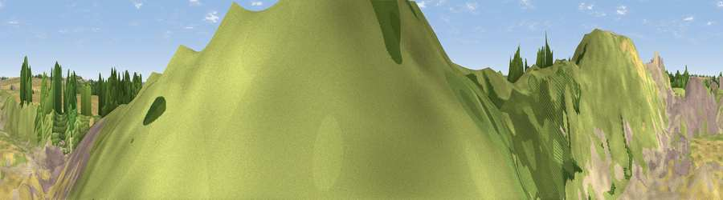

Viewpoint near Hampole
#22732 in England · top 29% of its area beats it · near HampoleWhere it is
The exact computed spot (SE 49975 11075). Click the marker for map links.
The view, rendered

A 360° render of this exact spot computed from the terrain model, tree cover and land cover — summer colours, afternoon light, calibrated against photographs of famous viewpoints. Real trees, hedges and buildings will differ in detail.
The panorama
Grey silhouette: terrain skyline in each direction (720 bearings, Earth curvature and refraction included). Dashed green: skyline with trees (+15 m) and buildings (+8 m) as obstacles. Blue strip: how far the ground is visible on each bearing.
Where the view opens
Wedge length = distance to the farthest visible ground on that bearing (vegetation-aware). Rings at 10, 25 and 50 km.
What fills the view
54% cropland · 17% grassland · 15% woodland · 8% bare ground · 6% built-up
Angular shares of the visible panorama (visual magnitude), not map area. Landscape diversity 0.56 (0–1 Shannon).
Key numbers
More beautiful places nearby
The staircase of upgrades: each row has a higher view potential than everything closer. Driving times are estimates from straight-line distance, calibrated against real road routing — check an actual route before setting out.
| Place | Direction | Drive | Score |
|---|---|---|---|
| Viewpoint near Grimethorpe | W · 7 km | ~15 min | 63.8 |
| Hoyland Lowe | SW · 17 km | ~30 min | 64.5 |
| Viewpoint near Woolley | W · 18 km | ~31 min | 66.2 |
| Viewpoint near Maltby | SSE · 19 km | ~33 min | 70.7 |
| Viewpoint near Whitley | SW · 23 km | ~38 min | 72.1 |
| Viewpoint near Wharncliffe Side | SW · 24 km | ~39 min | 75.0 |
| Viewpoint near Wharncliffe Side | SW · 24 km | ~39 min | 75.2 |
| Viewpoint near Otley | NW · 45 km | ~65 min | 77.5 |
53.59388, -1.24642 · source: screening · position refined by local search. Computed location — check access rights before visiting.